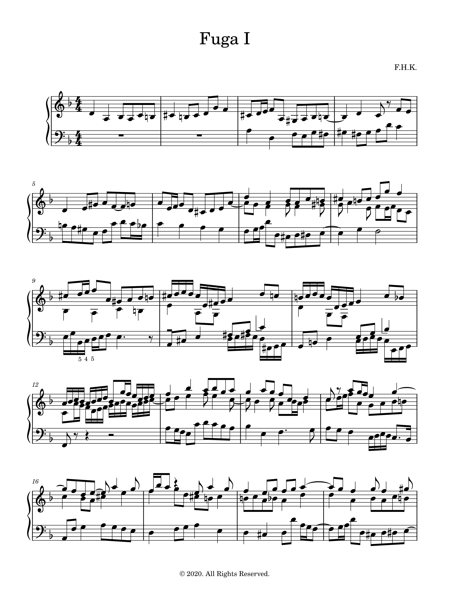
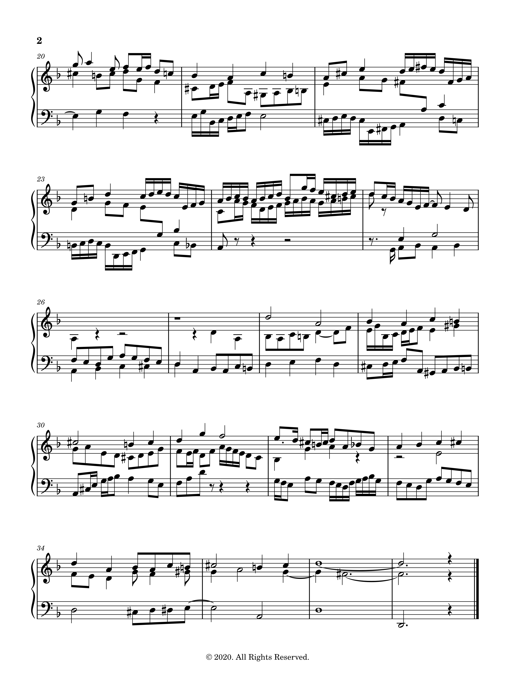
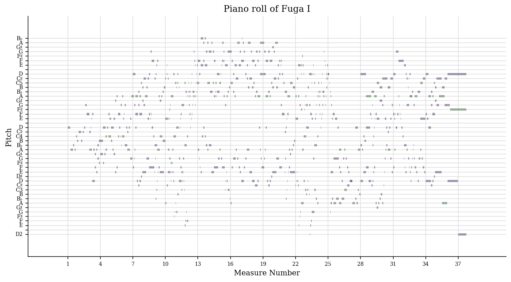

Francisco's musical notebook
Table of Contents
Welcome to Francisco's personal musical "notebook/scrapbook"! This page contains notes, scribbles and doodles for my personal use, but you are very welcome to have a look at them!
Compositional ideas behind Fuga I
This is a personal note of the musical ideas that were used in the composition of my Fuga I (all rights reserved, © 2020).
1 Introduction
In the composition of this fugue in D minor, the main idea was to use the B-A-C-H motif within the counterpoint rules of the Baroque period—in particular in Bach's time. This means:
- avoid any parallel fifths/octaves and avoid direct fifths/octaves,
- avoid dissonances on strong/accented beats unless it is an essential dissonance
- resolve the melodies correctly (vertically and horizontally), e.g. the \(^{6}_{4}\) chords (2nd inversion triads) and the \(^{2}\) chords (3rd inversion seventh chords),
among other general rules.
The ideas that were used as guiding principles this fugue were as follows:
- Use and explore extensively the B-A-C-H motif and try to render this motif as melodious as possible
- Have a well-thought and well-built structure
- Employ the double/triple (invertible) counterpoint as much as possible.
2 Music/Score
The score can be found below, and the fugue can be played here:


3 Structural analysis
The structure diagram is shown in Figure 1. which shows schematically the location of the subject, countersubjects, episodes and the invertible counterpoints (inv. c.) amongst other indications. The scores with these indications can then be found in Subsection 3.2. The structure of the fugue with entries and episodes are shown on the first score. The highlighted subject,
countersubjects and the inverted counterpoint are detailed on the second score.
3.1 Structure diagram

Figure 1: Structure diagram
This fugue can be divided in three parts: measures 1-12 (in which all the voices enter successively, i.e., it is an exposition), measures 13-14 and measures 27-37. The final part of the fugue contains a stretto with an augmentation (in the upper voice) and a coda with a short (and repeated) episode that precedes it and that serves as a two-voice cadence. There is only one perfect authentic cadence in this piece with all the three voices, and it occurs at the end of the fugue. The voices collapse to just one voice at the very beginning of the coda, before opening up again with the successive entries of the subject in each voice.
There is a notable deceptive cadence in measure 5 (V → VI [I]) and a quite brutal and sudden transition from F major to D minor in measure 24, whereas there is (only) one perfect authentic cadence in this piece with all the three voices–it occurs at the end of the fugue which finishes with an Picardy third. The inverted counterpoint at the octave is profusely used in this fugue, and a voice is dropped from time to time at certain places in order to alleviate the texture of the fugue.
3.2 Score analysis
3.2.1 Entries/episodes
3.2.2 Subjects/countersujects and invertible counterpoint
4 Specific details
4.1 Zenith/nadir of the piece
The piece has a brief central part in the relative major (F major). The zenith of this fugue is in this F major section, which is generally in the higher pitch registry. The D minor section, in contrast, is much more grounded in the lower pitch registry.
4.2 The strong-beat tritone in the lower voices
In measure 9 (episode 2-1), the two lower voices form a tritone on the very first beat (E and \(\textbf{B}\flat\)) which is not allowed in principle (the fact that the dissonant interval is with the bass AND the fact that the dissonance is on the first beat). This is the only place in this fugue where such a dissonance occur, and this is to stress the B-A-C-H motif that enters with an augmentation with respect to the subject.
4.3 German sixth (übermässiger Quintsextakkord)

Figure 2: (Suggested) German sixth chord without the fifth.
The B-A-C-H motif is a chromatically difficult melodic/harmonic line to handle. This can give rise to many exciting melodic and harmonic possibilities in a freer setting of course, but it can be a difficult task within the rules of strict counterpoint.
This motif sounds mysterious and very eerie when the third voice hasn't entered yet, as the harmonic suggestion is not yet clear without the third voice and the chromatic voices are very dissonant. However, the entry of the third voice suggests a very interesting harmonic progression, with the middle voice (the secound countersubject) having a delayed resolution after the B-A-C-H motif (the augmented interval within the middle voice should be followed by a contrary motion first).
The D\(\sharp\) (Dis) suggests the VII degree of E, and one way of understanding this functionally is to think of it as the German sixth–with the fifth omitted–in the tonality of E, i.e., a chord with \(\sharp\text{IV}-\flat\text{VI}-\text{I (omitted)}-\text{III}\). It is then resolved in one of the traditional ways in the tonality of A.
4.4 Double sequence
Figure 3: The double sequence with the pattern and imitative sequence used in all the voices.
This passage is a double sequence, where a pattern and an imitative sequence–a sequence in which voices imitate other voices–is again used as an (inclusive) sequence. The imitative sequence is built such that the alto/tenor voice in the middle has a dactyl against an anapaest successively: making a nod to the second half of the subject.
Harmonically, the passage goes through the cycle of fifths "downwards". At the end of each measure, the last note of the middle voice is the seventh of the chords which should be resolved downwards by a half step (scale degree IV should, in principle, resolve down to III). However, as another voice (soprano) takes over the seventh of the chord and then resolves down correctly, the middle voice can go up a step to avoid a parallel octave. In this case, this also ensures that we have an inclusive sequence (i.e., in all the voices) by a step.
Figure 4: Measure wrapping up the double sequence which is again an imitative sequence.
Following the idea of pattern → sequence → contrast (or idea - → repetition → contrast/altered repetition), the next measure pursues a different melodic motifs. However, one of them is a recall of one of the motifs from the double sequence which allows a certain continuity with the double sequence. This passage is also an imitative sequence with a series of imperfect consonances (thirds and sixths), making these three measures complex yet beautiful with a lot of structure and symmetry. They come back once more later in the fugue as a triple counterpoint.
5 Appendix
5.1 Computational musicology
We now analyse the fugue with music21 (v6.7 in this appendix), a python package developed by MIT for computer-aided musicology.
5.1.1 Piano roll and other graphics
First initialise music21:
from music21 import * # environment.set('musescoreDirectPNGPath', '~/.myscript/MuseScore-3.6.2-x86_64.AppImage') path = '../music21/Fuga I analysis with music21.musicxml' fugue = converter.parse(path)
We can then plot the piano roll:
# fugue.plot('pianoroll') roll = graph.plot.HorizontalBarPitchSpaceOffset(fugue) roll.title = 'Piano roll of Fuga I' roll.figureSize = (12, 6) roll.run()

And plot it with pitch classes this time:
# fugue.plot('pianoroll') roll = graph.plot.HorizontalBarPitchClassOffset(fugue) roll.title = 'Piano roll of Fuga I' roll.figureSize = (12, 6) roll.run()

By using the spline interpolation, we can plot the notes as smoothed-out curves:
import numpy as np import matplotlib.pyplot as plt from scipy import interpolate fig = plt.figure() subplot = fig.add_subplot(1, 1, 1) for i in range(len(fugue.parts)): top = fugue.parts[i].flat.notes y = [n.pitch.ps for n in top] x = [n.offset + n.quarterLength/2.0 for n in top] tick = interpolate.splrep(x, y, s=0) xnew = np.arange(x[0], max(x), 0.01) ynew = interpolate.splev(xnew, tick, der=0) subplot.plot(xnew, ynew) subplot.spines['top'].set_color('none') subplot.spines['right'].set_color('none') plt.title('Fuga I motion') plt.show()
5.1.2 Key center
The key is found using the Krumhansl-Schmuckler key-finding algorithm which uses the correlation coefficient
\[R = \frac{\sum\limits_{i=1}^{n}(x_i - \bar{x})(y_i - \bar{y})}{\sqrt{\sum\limits_{i=1}^{n}(x_i - \bar{x})^2 \sum\limits_{i=1}^{n}(y_i - \bar{y})^2}}\]
in which one coordinate is the profile of each note in a major or minor key and the other coordinate is the total duration of each pitch class. The profiles have been empirically established values.
tonality = fugue.analyze('key') tonality
<music21.key.Key of d minor>
The correlation coefficient is then given by
tonality.correlationCoefficient
# Out[213]: : 0.9486855347153584
The correlation coefficient of other candidate keys:
import matplotlib.pyplot as plt import numpy as np plt.figure(figsize=(12, 6)) alternateKeys = [tonality] + tonality.alternateInterpretations keys = [str(alternateKeys[i]).split()[0] for i in range(len(alternateKeys))] corrCoeffs = [alternateKeys[i].correlationCoefficient for i in range(len(alternateKeys))] xPos = np.arange(len(keys)) plt.xticks(xPos, keys) plt.xlabel('Key') plt.ylabel('Correlation coefficient') plt.title('Correlation coefficients of the candidate keys') plt.tick_params(axis = "x", bottom = False) plt.bar(xPos, corrCoeffs, align='center', width=0.8) plt.show()

The histogram of the pitch classes:
fugue.plot('histogram', 'pitchClass')

The histogram of all the pitches:
fugue.plot('histogram', 'pitch')

The scatter plot with measures and pitch classes:
scatter = graph.plot.ScatterPitchClassOffset(fugue) scatter.title = 'Fuga I and its notes' scatter.figureSize = (12, 6) scatter.run()

The scatter plot with the pitch class by quarter length:
fugue.plot('scatter', 'pitchClass', 'quarterLength')

And in 3D:
fugue.plot('3dbars')

5.1.3 Chords
We now combine the three voices into Chord objects:
# Chordify fugue chords = fugue.chordify() # Insert chords in fugue fugue.insert(0, chords) # Chords closed position for c in chords.recurse().getElementsByClass('Chord'): c.closedPosition(forceOctave=4, inPlace=True) # Add Roman numeral analysis for c in chords.recurse().getElementsByClass('Chord'): rn = roman.romanNumeralFromChord(c, key.Key('d')) c.addLyric(str(rn.figure)) # Show fugue.measures(0,12).show()

One possibility would be as follows:
chordsFlat = chords.flat onlyChords = chordsFlat.getElementsByClass('Chord') displayPart = stream.Part(id='displayPart') def appendChordPairs(thisChord, nextChord): # if ((thisChord.isTriad() is True or # thisChord.isSeventh() is True) and # thisChord.root().name == 'D'): closePositionThisChord = thisChord.closedPosition(forceOctave=4) closePositionNextChord = nextChord.closedPosition(forceOctave=4) m = stream.Measure() m.append(closePositionThisChord) m.append(closePositionNextChord) displayPart.append(m) for i in range(len(onlyChords) - 1): thisChord = onlyChords[i] nextChord = onlyChords[i + 1] appendChordPairs(thisChord, nextChord) displayPart.show()
But we will do something simpler and better adapted to our case:
chordsFlat = chords.flat onlyChords = chordsFlat.getElementsByClass('Chord') onlyChords.measures(0,37).show()
With the chords, it is possible to analyse the key of each measures:
for m in chords.getElementsByClass('Measure'): k = m.analyze('key') print(m.number, k)
1 a minor 2 b- minor 3 d minor 4 a minor 5 d minor 6 g minor 7 d minor 8 d minor 9 a minor 10 D major 11 C major 12 F major 13 F major 14 g minor 15 F major 16 d minor ...
5.2 Fractal intervallic scaling in Fuga I
There is evidence that Bach's music could be fractal, in the sense that it can exhibit pitch, interval or structural-related scaling laws 1 , 2. A theoretical physicist's perspective of this would be the concept of universality in statistical mechanics at critical points of a system.
Here, we investigate the possibility of having an interval-related scaling law in the Fuga I. In the musical sense, the structure-related scaling might be understood easily when we think of the augmentation and the diminution of the subject, for instance. The indication that the distribution of the interval counts is fractal, however, is a bit more puzzling. This likely stems from the fact that the stepwise motion is favoured as opposed to skips and leaps.
Let us first count the number of existing intervals per voice:
from music21 import * import numpy as np from sklearn.linear_model import LinearRegression import matplotlib.pyplot as plt from collections import Counter # Import Fuga I path = './Fuga I analysis with music21.musicxml' fugue = converter.parse(path) # Get notes & intervals per voice (1, 2, 3) and then merge # all of them (hence length = 4). # Voice 1: soprano (last entry) / Voice 2: tenor/alto (first entry) / # Voice 3: bass (second entry) / Voice 4: all notes = [] for i in range(len(fugue.parts)): pitchesPerVoice = fugue.parts[i].flat.notes notes.append([n.pitch.ps for n in pitchesPerVoice]) notes.append([note for voice in notes for note in voice]) intervals = [] for voiceNotes in notes: intervalsPerVoice = [] for j in range(len(list(voiceNotes))-1): intervalsPerVoice.append(abs(voiceNotes[j+1]-voiceNotes[j])) intervals.append(intervalsPerVoice) # Show existing intervals in the Fuga I analysis.discrete.MelodicIntervalDiversity().countMelodicIntervals(fugue.parts)
{'P4': [<music21.interval.Interval P4>, 48],
'm2': [<music21.interval.Interval m2>, 190],
'm3': [<music21.interval.Interval m3>, 56],
'M2': [<music21.interval.Interval M2>, 264],
'd4': [<music21.interval.Interval d4>, 3],
'm6': [<music21.interval.Interval m6>, 11],
'A1': [<music21.interval.Interval A1>, 14],
'M6': [<music21.interval.Interval M6>, 15],
'M3': [<music21.interval.Interval M3>, 16],
'A2': [<music21.interval.Interval A2>, 3],
'P11': [<music21.interval.Interval P11>, 1],
'P5': [<music21.interval.Interval P5>, 8],
'm14': [<music21.interval.Interval m14>, 1],
'P8': [<music21.interval.Interval P8>, 5],
'M10': [<music21.interval.Interval M10>, 1],
'd5': [<music21.interval.Interval d5>, 1]}
Now count intervals for each voice:
intervalCounts = [] sortedIntervalCounts = [] for i in range(len(intervals)): intervalCount = Counter(intervals[i]) sortedIntervalCount = sorted(intervalCount.items()) intervalCounts.append(intervalCount) sortedIntervalCounts.append(sortedIntervalCount) print("Voice {}: {}".format(i+1, sortedIntervalCounts[i]))
Voice 1: [(0.0, 5), (1.0, 59), (2.0, 86), (3.0, 15), (4.0, 6), (5.0, 16), (8.0, 3), (9.0, 5), (17.0, 1)] Voice 2: [(0.0, 9), (1.0, 76), (2.0, 86), (3.0, 26), (4.0, 8), (5.0, 19), (7.0, 3), (8.0, 3), (9.0, 6), (12.0, 1), (22.0, 1)] Voice 3: [(0.0, 4), (1.0, 69), (2.0, 92), (3.0, 18), (4.0, 5), (5.0, 13), (6.0, 1), (7.0, 5), (8.0, 5), (9.0, 4), (12.0, 4), (16.0, 1)] Voice 4: [(0.0, 18), (1.0, 204), (2.0, 264), (3.0, 59), (4.0, 19), (5.0, 48), (6.0, 1), (7.0, 8), (8.0, 11), (9.0, 16), (12.0, 6), (16.0, 1), (17.0, 1), (22.0, 1)]
Let us now choose the bin size (as well as how to treat the intervals) of each voice by considering the melodies. In other words, let us take into account the melodic jump between measures 26 and 28 for the analysis of the soprano voice (voice 1), i.e., we omit the intervals larger than 9 semitones. For the tenor/alto voice (voice 2), the jump in measure 25 and the octave jump in 27 will be considered. Lastly, the bass voice (voice 3) will exclude the jump between measures 12 and 13:
# Voice 1 # Jump in measures 26-28 bins1 = [0, 3, 6, 9] foldedIntervals1 = [i for i in intervals[0] if i <= 9] # omitted after 9 # Voice 2 # Jump in measure 25 & octave jump in 27 bins2 = [0, 3, 6, 9] foldedIntervals2 = [i for i in intervals[1] if i <= 9] # omitted after 9 # Voice 3 # Jump in measures 12-13 bins3 = [0, 3, 6, 9, 12] foldedIntervals3 = [i for i in intervals[2] if i <= 12] # Omitted after 12 # All the voices bins4 = [0, 5, 10, 16] foldedIntervals4 = [i for i in intervals[3] if i <= 16] # Omitted after 16
The bin \(0-3\), for instance, includes the interval 0 but not the interval 3. This is true for all bins except for the last bins that include the supremum. The last bins can also be stretched to accommodate the extremal intervals that are used sparingly in music.
As an example, when looking at all the melodies together after our choice of bin size and interval treatment, the following intervals remain:
bins = [bins1, bins2, bins3, bins4] foldedIntervals = [foldedIntervals1, foldedIntervals2, foldedIntervals3, foldedIntervals4] newIntervalCounts = [np.histogram(foldedIntervals[i], bins=bins[i])[0] for i in range(4)] newFoundIntervals = [] for i in range(4): newIntervals = [] for j in range(len(bins[i])-1): newIntervals.append((bins[i][j] + bins[i][j+1])/2) newFoundIntervals.append(newIntervals) sorted(Counter(foldedIntervals[3]).items())
[(0.0, 18), (1.0, 204), (2.0, 264), (3.0, 59), (4.0, 19), (5.0, 48), (6.0, 1), (7.0, 8), (8.0, 11), (9.0, 16), (12.0, 6), (16.0, 1)]
Finally, the final fractal dimension of the Fuga I is shown here:
figIndex = 3 xOrig = np.array(newFoundIntervals[figIndex]).reshape((-1, 1)) f = lambda k: 2 ** (k/12) x = np.log(f(xOrig)) y = np.log(np.array(newIntervalCounts[figIndex])) linearRegression = LinearRegression() model = linearRegression.fit(x, y) y_pred = linearRegression.predict(x) r_sq = model.score(x, y) # Plot fig, (ax1) = plt.subplots(nrows=1, ncols=1, figsize = (6,4)) ax1.scatter(x, y, color="black") ax1.plot(x, y_pred, color="blue", linewidth=3, \ label=r'$\log(N) = C - d_{f}\, \log(2^{i/12})$') ax1.set_xlabel(r'$\log(2^{i/12})$', fontsize=10) ax1.set_ylabel(r'$\log(N)$', fontsize=10) ax1.set_title('All the voices', fontsize=12) ax1.text(0.9, 0.6, \ r'$d_{f} =$' + str(round(-linearRegression.coef_[0], 3)) + '\n \n' + r'$R^{2} =$' + f'{r_sq:.3f}', \ horizontalalignment='center', verticalalignment='center', fontsize=10, transform=ax1.transAxes) ax1.text(0.03, 0.06, 'Bins: ' + f'{bins[figIndex]}', \ horizontalalignment='left', fontsize=6, transform=ax1.transAxes) ax1.legend(numpoints=1, loc=1, fontsize=7) plt.show()
We now show the anaylsis for separate voices as well, where the most coherent bin size and the interval treatment (with respect to the music structure and the musical ideas) have been selected, as mentioned above:
f = lambda k: 2 ** (k/12) xOrig = [np.array(newFoundIntervals[i]).reshape((-1, 1)) for i in range(4)] x = [np.log(f(xOrig[i])) for i in range(4)] y = [np.log(np.array(newIntervalCounts[i])) for i in range(4)] linearRegression = [LinearRegression() for i in range(4)] model = [linearRegression[i].fit(x[i], y[i]) for i in range(4)] y_pred = [linearRegression[i].predict(x[i]) for i in range(4)] r_sq = [model[i].score(x[i], y[i]) for i in range(4)] # Plot #fig, axs = plt.subplots(nrows=2, ncols=2, figsize = (6,4), tight_layout = True) fig, axs = plt.subplots(nrows=2, ncols=2, figsize = (9,6)) fig.subplots_adjust(hspace = .6, wspace=.3) axs = axs.ravel() titles = ['Voice 1', 'Voice 2', 'Voice 3', 'All the voices'] for i in range(4): axs[i].scatter(x[i], y[i], color="black") axs[i].plot(x[i], y_pred[i], color="blue", linewidth=3, \ label=r'$\log(N) = C - d_{f}\, \log(2^{i/12})$') axs[i].set_xlabel(r'$\log(2^{i/12})$', fontsize=10) axs[i].set_ylabel(r'$\log(N)$', fontsize=10) axs[i].set_title(f'{titles[i]}', fontsize=12) axs[i].text(0.85, 0.62, \ r'$d_{f} =$' + str(round(-linearRegression[i].coef_[0], 3)) + '\n \n' + r'$R^{2} =$' + str(round(r_sq[i], 3)), \ horizontalalignment='center', verticalalignment='center', fontsize=10, transform=axs[i].transAxes) axs[i].text(0.03, 0.06, 'Bins: ' + f'{bins[i]}', \ horizontalalignment='left', fontsize=6, transform=axs[i].transAxes) axs[i].legend(numpoints=1, loc=1, fontsize=7) plt.show()
The fit using three points only could make us doubt that the interval distribution is really fractal. But it should be reminded that such a fractal law in music should only arise after some coarse-graining at a larger scale. And since that an octave is divided in 12 semitones only and that the musically coherent intervals are quite limited, finishing with three points only at the end of the binning does not seem unreasonable. And a linear fit of three points is by no means a trivial guarantee :).
It should also be noted, however, that the dimension and the \(R^2\) are all quite sensitive to the bin size and the way we treat the intervals. For completeness, here are some of the results with different configurations:
| Bins | Intervals | \(d_{f}\) | \(R^{2}\) |
|---|---|---|---|
| 0-2, 2-4, 4-6, 6-9, 9-17 | All the intervals | 4.432 | 0.626 |
| 0-2, 2-4, 4-6, 6-9 | Omitted after 9 | 6.321 | 0.800 |
| 0-3, 3-6, 6-9 | Folded after 9 | 8.458 | 0.999 |
| 0-3, 3-6, 6-9 | Omitted after 9 | 8.458 | 0.999 |
| Bins | Intervals | \(d_{f}\) | \(R^{2}\) |
|---|---|---|---|
| 0-3, 3-6, 6-9, 9-12 | Omitted after 12 | 6.790 | 0.874 |
| 0-3, 3-6, 6-12 | Folded after 16 | 5.725 | 0.994 |
| 0-3, 3-6, 6-10 | Folded after 11 | 6.880 | 0.99996 |
| 0-3, 3-6, 6-9 | Omitted after 9 | 7.666 | 0.995 |
| Bins | Intervals | \(d_{f}\) | \(R^{2}\) |
|---|---|---|---|
| 0-3, 3-6, 6-9, 9-12, 12-16 | Omitted after 16 | 5.070 | 0.868 |
| 0-4, 4-8, 8-12 | Folded after 12 | 5.723 | 0.922 |
| 0-4, 4-8, 8-12, 12-16 | Folded after 16 | 5.099 | 0.927 |
| 0-3, 3-6, 6-9, 9-12 | Folded after 12 | 5.940 | 0.936 |
| 0-3, 3-6, 6-9, 9-12 | Omitted after 12 | 5.924 | 0.933 |
| Bins | Intervals | \(d_{f}\) | \(R^{2}\) |
|---|---|---|---|
| 0-3, 3-6, 6-9, 9-12 | Folded after 12 | 6.353 | 0.876 |
| 0-4, 4-8, 8-12 | Folded after 12 | 5.723 | 0.922 |
| 0-4, 4-8, 8-12, 12-16 | Folded after 16 | 6.092 | 0.983 |
| 0-5, 5-10, 10-16 | Folded after 16 | 7.024 | 0.999 |
| 0-5, 5-10, 10-16 | Omitted after 16 | 7.247 | 0.998 |
The selected version for the analysis with all the voices (red line) assumes that a jump of up to a a tenth (16 semitones) is reasonable but that jumps greater than that are to evoke a very special and out-of-the-ordinary effect.
Footnotes:
H. J. Brothers, Intervallic scaling in the Bach cello suites, Fractals, 4 (2009) 537–545.
K. Hsu and A. Hsu, Fractal geometry of music, Proc. Natl. Acad. Sci. USA, 87 (1990) 938–941.
This webpage was built with Org mode, using fniessen's org-html-themes and System Crafters's Org website publishing example, along with gjbae1212's hit counter.